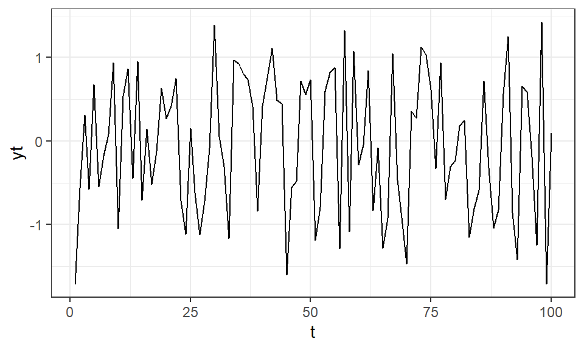
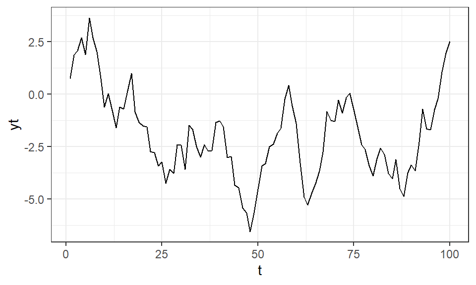
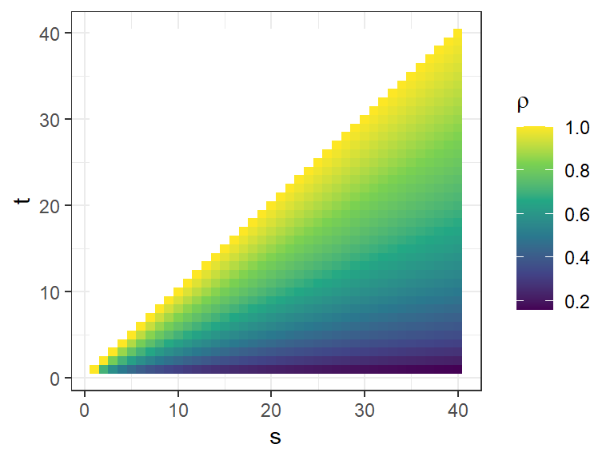
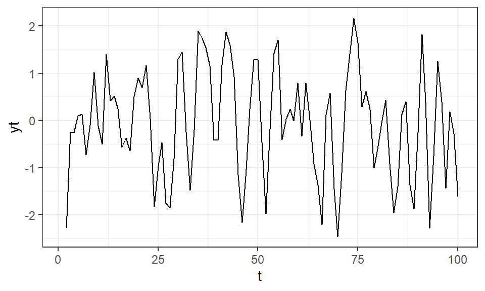
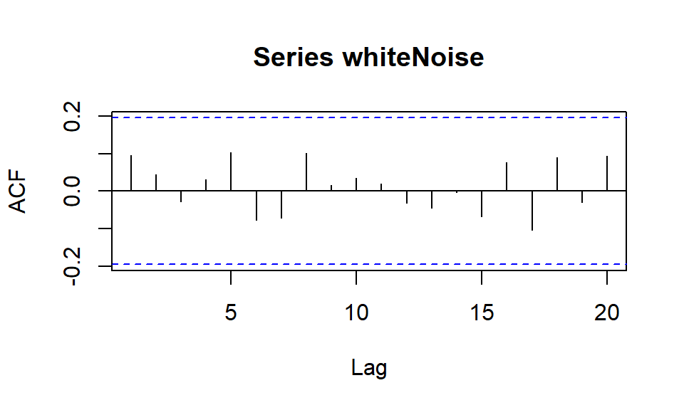
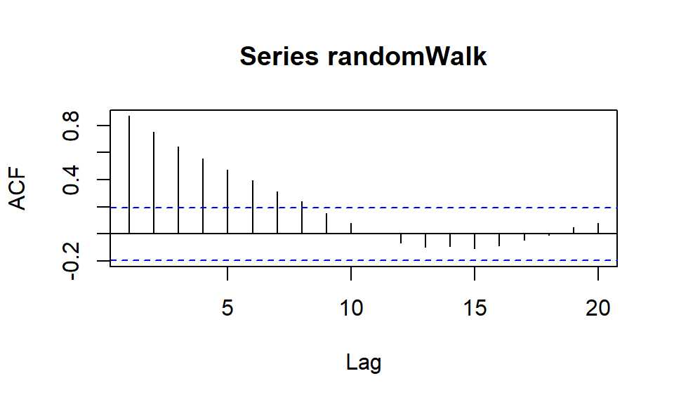
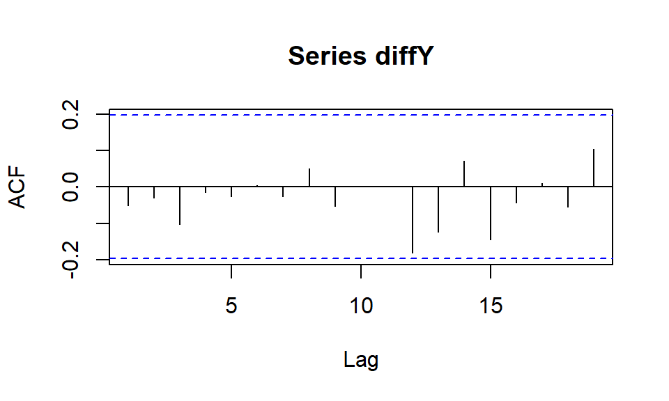

När det kommer till hantering, bearbetning och analys av tidsserier i R är det vanligast att vi sparar serien som en tibble med två kolumner; tid och variabeln som mäts. Varje rad motsvarar mätvariabelns värde vid tidpunkt \(t\), betecknad som \(Y_t\). Om vi får tillgång till data med en annan struktur behöver vi bearbeta om den till detta format.
21.1 Databearbetning
Vi kan titta närmare på det exempeldata om elpriser som visualiserades i Figur 20.1.
Visa kod
# Visar de första observationerna i serienhead(prices)
I utskriften visas de sex första observationerna, med ett antal variabler som beskriver tidpunkten för mätningen och mätvariabeln pris (\(Y_t\)).
Notera att tidsvariabeln tid i detta fall inte är numerisk utan en textsträng som innehåller både år och månad. För att analysera och visualisera detta data krävs en bearbetning till ett tidsindex, \(t\), som endast beskriver ordningen av observationer.
Det enklaste sättet att göra detta är att skapa en ny variabel som helt enkelt räknar från 1 till den sista observationen i serien. Med hjälp av funktionerna seq_len()1 och nrow()2 kan vi skapa en sekvens av antalet raders längd.
Kom ihåg att vi inom R måste spara resultatet av databearbetningen i ett objekt för att den ska kunna användas vid ett senare tillfälle. Just nu finns endast t som ett separat objekt utanför datamaterialet prices.
Testa nu att lägga till detta tidsindex till datamaterialet istället för att en separat vektor.
CautionÖvning 1
Utifrån datamaterialet prices, skapa ett nytt objekt eller lägg till i samma objekt, en ny variabel \(t\) som innehåller ett tidsindex.
Ibland kan det vara av intresse att plocka ut vissa tidpunkter, till exempel om någon specifik tidpunkt är fokus av undersökningen eller om vissa observationer kan anses missvisande och behöver undersökas i detalj. Det finns tre huvudsakliga sätt att indexera data i R; med hjälp av olika funktioner från dplyr-paketet eller två olika sätt att använda [].
# Plockar ut tidpunkt 5prices |>slice(5) |>pull(pris)
[1] 71.1
# Alternativt plockar ut rad 5 och variabeln pris från en data.frameprices[5, "pris"]
# A tibble: 1 × 1
pris
<dbl>
1 71.1
# Alternativt plockar ut element 5 från vektorn (variabeln) prisprices$pris[5]
[1] 71.1
I utskriften visas nu samma \(Y_5\) tre gånger, med något olika format. Vi behöver inte tänka så mycket på formatet av det resulterande objektet just nu, men det är värt att återkomma till när vi senare vill fortsätta analyserna då vissa metoder/funktioner kräver vissa specifika format.
Verbet slice() plockar ut specifika rader och pull() plockar ut en specifik kolumn vilket resulterar i en vektor.
Det andra alternativet är att använda [radindex, kolumnindex] på ett objekt innehållande både rader och kolumner där kolumnindex kan anropas med antingen namnet på kolumnen om det är lättare att identifiera eller siffror.
Om vi först väljer ut kolumnen pris från datamaterialet med hjälp av $ har objektet endast en dimension och då används bara ett [index].
Viktigt
Det är viktigt att komma ihåg att R indexerar med bas 1, alltså första elementet i en dimension är numrerad som 1.
Testa nu själv att plocka ut det tionde priset i serien.
CautionÖvning 2
Vilket värde har den tionde observationen i serien, \(Y_{10}\)?
Genom att t.ex. använda prices$price[10] kan vi få fram det tionde värdet.
21.2 Beskrivande mått av en tidsserie
Vi kan anse vardera \(Y_t\) vara en slumpvariabel vilket innebär att hela serien är en sekvens av slumpmässiga utfall. På grund av tidsberoendet mellan intilliggande observationer kan vi definiera detta som en stokastisk process3. Ordet “process” antyder att vi tillåter en riktad påverkan mellan mätvärden till skillnad från ett datamaterial med stokastiska variabler där observationerna är fullt oberoende.
Likt en regressionsmodell kan vi sammanfatta serien med dess väntevärde och varians4 men tidsberoendet kräver att vi lägger till ytterligare en aspekt av beskrivningen; relationen mellan olika tidssteg.
Vi kan börja med att definiera väntevärdet av den stokastiska processen enligt:
\[
\begin{aligned}
\mu_t = E[Y_t]
\end{aligned}
\tag{21.1}\] där \(\mu_t\) kan variera för olika värden på \(t\). Variansen definieras på liknande sätt: \[
\begin{aligned}
Var(Y_t) &= E\left[(Y_t - \mu_t)^2\right]\\
&= E\left[Y_t^2\right] - \mu_t^2
\end{aligned}
\tag{21.2}\] där även variansen kan variera för olika värden på \(t\).
Tidsberoendet i serien kan modelleras med hjälp av autokovarians och autokorrelation, där den senare är mer använd på grund av dess enklare tolkning. Tillägget av ordet “auto” på mått som vanligtvis används för att beskriva relationen mellan två olika variabler, betyder att vi nu fokuserar på relationen mellan två tidssteg inom samma variabel.
Autokovariansen mellan två tidpunkter, tid \(t\) och \(s\), definieras med hjälp av den grekiska bokstaven gamma som: \[
\begin{aligned}
\gamma_{t,s} &= cov(Y_t, Y_s) \\
&= E[(Y_t - \mu_t)(Y_s - \mu_s)]\\
&= E[Y_t Y_s] - \mu_t \mu_s
\end{aligned}
\tag{21.3}\]
Autokorrelationen mellan de två tidpunkterna definieras med hjälp av den grekiska bokstaven rho5 som: \[
\begin{aligned}
\rho_{t,s} &= corr(Y_t, Y_s) \\
&= \frac{\gamma_{t,s}}{\sqrt{\gamma_{t,t}\gamma_{s,s}}}
\end{aligned}
\tag{21.4}\]
Autokovariansen mäter det linjära sambandet mellan de två tidsstegen, där större värden indikerar på ett starkare samband. Dock är detta mått beroende av skalan på mätvariabeln vilket medför att autokorrelationen, med dess skala från -1 till 1, är generellt lättare att tolka. Om \(\rho_{t, s} \approx \pm 1\) indikeras ett starkt linjärt beroende medan värden nära 0 indikerar ett svagt linjärt beroende. När \(\rho_{t,s} = 0\) anser vi att tidpunkterna är okorrelerade.
Notera
Autokorrelationen kan till exempel användas i en linjär regressionsmodell där ett av antagandena att feltermerna och därmed modellens residualer är okorrelerade. Under antagande att residualerna i observationsordning är en form av stokastisk process skulle autokorrelationen mellan intilliggande observationer kunna användas för att kontrollera ifall antagandet är uppfylld.6
Sammanfattningsvis kan vi beskriva egenskaper hos autokovarians och autokorrelation enligt:
autokovariansen mellan samma tidpunkt är detsamma som variansen för tidpunkten,
autokovariansen mellan \(s\) och \(t\) är densamma som mellan \(t\) och \(s\) då antalet tidssteg är lika,
beloppet av autokovariansen mellan två tidssteg är alltid högst roten ur produkten av de två tidsstegens varianser,
autokorrelationen mellan samma tidpunkt är 1,
autokorrelationen mellan \(s\) och \(t\) är densamma som mellan \(t\) och \(s\) då antalet tidssteg är lika,
autokorrelationen begränsas mellan -1 och 1.
21.3 Enkla tidsserier
Vi kan tillämpa dessa beskrivande mått på ett par enkla exempelserier för att få en bild av hur dem påverkas av olika beroenden.
21.3.1 Vitt brus
En serie som endast består av identiska och oberoende dragningar från \(N(0, \sigma^2_e)\) brukar kallas för vitt brus. Vi definierar serien som: \[
\begin{aligned}
Y_t = e_t
\end{aligned}
\] Vi kan i R generera en serie med vitt brus genom dragningar från rnorm() med väntevärde 0 och en godytcklig varians.
# Dra 100 observationer från normalfördelningenn <-100whiteNoise <-rnorm(n = n, mean =0, sd =1)# Visualisera serien i ett linjediagramtibble(t =seq_len(n),yt = whiteNoise) |>ggplot() +aes(x = t, y = yt) +geom_line() +theme_bw()

Figur 21.1: En serie med vitt brus
Diagrammet visar en serie där i princip ingen trend eller mönster kan utläsas. Serien ser ut att vara centrerad kring \(y = 0\) med en viss slumpmässig variation. Testa att ändra värdet på sd i funktionen rnorm() till något annat tal, kanske ett större. Diagrammet ser minst lika slumpmässigt ut men vi ser då en större variation kring \(y = 0\).
Notera
Vid linjär regression är det denna sorts mönster vi vill utläsa på residualerna över tid för att uppfylla kravet om oberoende för modellen. Detsamma gäller även för tidsserier, där vi vill att modellen endast ska efterlämna vitt brus i sina residualer.
På grund av att vi drar oberoende dragningar antas intilliggande observationer inte ha någon påverkan på varandra och vi kan sammanfatta seriens egenskaper med följande beskrivande mått: \[
\begin{aligned}
\mu_t = E[e_t] &= 0 \quad \text{för alla } t\\
\gamma_{t, s} &= \begin{cases}
Var(e_t) &\text{om } s = t\\
0 &\text{om } s \ne t
\end{cases}\\
\rho_{t, s} &= \begin{cases}
1 &\text{om } s = t\\
0 &\text{om } s \ne t
\end{cases}
\end{aligned}
\] Det vill säga väntevärdet för varje tidpunkt är konstant (0), autokovariansen och autokorrelationen mellan intilliggande punkter är 0 på grund av att de anses oberoende. Om tidpunkterna är densamma används egenskaperna från Ekvation 21.5.
21.3.2 Random Walk
En annan tidsserie som också består av slumpmässiga dragningar från en normalfördelning är Random Walk. Till skillnad från vitt brus bygger en Random Walk vidare på tidigare observationer enligt: \[
\begin{aligned}
Y_t = \begin{cases}
e_t &\text{om } t = 1\\
Y_{t-1} + e_t &\text{annars}
\end{cases}
\end{aligned}
\tag{21.6}\]
# Ange längden av serien som ska genererasn <-100# Initialisera ett tomt objektrandomWalk <-numeric()# Generera en Random Walk seriefor (i inseq_len(n)) {if (i ==1) { randomWalk[i] <-rnorm(n =1, mean =0, sd =1) } else { randomWalk[i] <- randomWalk[i-1] +rnorm(n =1, mean =0, sd =1) }}# Visualisera serien i ett linjediagramtibble(t =seq_len(n),yt = randomWalk) |>ggplot() +aes(x = t, y = yt) +geom_line() +theme_bw()

Figur 21.2: En serie som visar en Random Walk
Namnet Random Walk (sv. slumpmässig promenad) kommer från att man vid en (slumpmässig) promenad tar (slumpmässiga) steg vid varje tidpunkt men var du befinner dig vid varje steg påverkas av var du gått tidigare. Trots att en Random Walk serie endast består av slumpmässiga tilläggssteg ser det fortfarande ut som att serien har någon form av mönster, åtminstone en trend. Dock kan väntevärdet av serien beräknas till 0 för varje \(t\) enligt: \[
\begin{aligned}
\mu_t = E[Y_t] &= E[e_1 + e_2 + \dots + e_t] \\
&= E[e_1] + E[e_2] + \dots + E[e_t] \\
&= 0 + 0 + \dots + 0 \\
&= 0
\end{aligned}
\]
Däremot ser vi att variansen av serien ökar med varje steg: \[
\begin{aligned}
Var(Y_t) &= Var(e_1 + e_2 + \dots + e_t) \\
&= Var(e_1) + Var(e_2) + \dots + Var(e_t)\\
&= \sigma^2_e + \sigma^2_e + \dots + \sigma^2_e\\
&= t\sigma^2_e
\end{aligned}
\]
En Random Walk kan vara en lämplig modell för att något förenklat beskriva aktiekurser där det till synes sker slumpmässiga förändringar vid varje tidpunkt (dag) men dagens kurs börjar där gårdagens kurs slutade.
För att beräkna autokovariansen och autokorrelationen för dessa, och andra mer komplicerade serier, kommer vi använda följande räkneregel:
\[
\begin{aligned}
cov\left[\sum_{i = 1}^m c_i Y_{t_i}, \sum_{j = 1}^n d_j Y_{s_j}\right] = \sum_{i = 1}^m \sum_{j = 1}^n c_i d_j \cdot cov(Y_{t_i}, Y_{s_j})
\end{aligned}
\tag{21.7}\] där \(c_i\) och \(d_j\) är konstanter samt \(t_i\) och \(s_j\) är tidpunkter. Vad denna räkneregel innebär är att kovariansen mellan två summor av utfall kan förenklas till en summa av utfallens kovarianser.
Kovariansen mellan tidpunkter i en Random Walk kan beräknas enligt följande givet att \(1 \le t \le s\) när vi använder Ekvation 21.7:
\[
\begin{aligned}
\gamma_{t, s} &= cov(e_1 + e_2 + \dots e_t, \quad e_1 + e_2 + \dots + e_t + e_{t+1} + \dots + e_s)\\
&= \sum_{i = 1}^m \sum_{j = 1}^n cov(e_i, e_j)
\end{aligned}
\] det vill säga kovariansen av en summa utfall \(e_1 + e_2 + \dots + e_t\) och \(e_1 + e_2 + \dots + e_t + e_{t+1} + \dots + e_s\).
Eftersom varje \(e_t\) är oberoende av varandra är kovariansen definierad enligt: \[
\begin{aligned}
cov(e_i, e_j) =
\begin{cases}
\sigma^2_e &\text{om } i = j\\
0 &\text{annars}
\end{cases}
\end{aligned}
\]
De två serierna har endast \(t\) tidssteg som är lika vilket innebär att summan av alla kovarianser är: \[
\begin{aligned}
\gamma_{t, s} = t\sigma^2_e
\end{aligned}
\] eller mer generellt \(\gamma_{t, s} = min(t,s)\cdot \sigma^2_e\).
För att lättare tolka relationen mellan tidssteg kan vi beräkna autokorrelationen enligt: \[
\begin{aligned}
\rho_{t, s} &= \frac{\gamma_{t,s}}{\sqrt{\gamma_{t,t}\gamma_{s,s}}} \\
&= \frac{t\sigma^2_e}{\sqrt{t\sigma^2_e s\sigma^2_e}} \\
&= \frac{t\sigma^2_e}{\sqrt{t\sigma^2_e}} \cdot \frac{1}{\sqrt{s\sigma^2_e}}\\
&= \frac{(t\sigma^2_e)^{1-0.5}}{1}\cdot \frac{1}{\sqrt{s\sigma^2_e}}\\
&= \sqrt{ \frac{t\sigma^2_e}{s\sigma^2_e}}\\
&= \sqrt{ \frac{t}{s}}
\end{aligned}
\] för alla \(1 \le t \le s\). En visualisering av olika värden på \(\rho\) för olika tidssteg visas nedan.

Figur 21.3: Autokorrelationen för olika avstånd av tidssteg t och s i en Random Walk serie
Figuren visar att ett kortare avstånd mellan \(t\) och \(s\), ett kortare antal steg, visar en starkare autokorrelation än längre avstånd. Vi ser också ett fenomen där längre serier, stora \(s\), generellt har en långsammare nedgång av autokorrelationen när avståndet ökar vilket beror på att de delar en större del av serien. För att koppla tillbaka detta till den fysiska promenaden kan vi tolka det som att vår placering nära i tiden är mer sammankopplad med varandra än vår placering längre bort i tiden, vilket känns ganska naturligt.
Till exempel har följande kombinationer mellan \(t\) och \(s\) samma avstånd men olika styrka:
Det sista exemplet på en enkel tidsserie är ett glidande medelvärde. Som namnet antyder är det ett medelvärde beräknat utifrån ett glidande fönster av observationer, i det enklaste fallet medelvärdet av två \(e\):
n <-100# Använd samma vita brus serie som en samling av dragningar från N(0,1)et <- whiteNoisemovingAverage <-numeric()for (i inseq_len(n)) {if (i ==1) { movingAverage[i] <-NA } else { movingAverage[i] <-mean(et[i] + et[i -1]) }}# Visualisera serien i ett linjediagramtibble(t =seq_len(n),yt = movingAverage) |>ggplot() +aes(x = t, y = yt) +geom_line() +theme_bw()

Figur 21.4: Exempelserie för ett glidande medelvärde
Ett glidande medelvärde är mindre volatil (mindre instabil och förändringar sker mycket långsammare) än den ursprungliga serien vilket vi kan se genom att jämföra detta diagram med vita bruset. Orsaken till denna är att vi beräknar ett medelvärde mellan intilliggande punkter som agerar en form av utjämnare successivt över tid.
Väntevärdet och variansen av serien kan beräknas till:
Eftersom intilliggande \(Y\) endast delar en \(e_t\) och på grund av oberoendet mellan olika dragningar av \(e_t\) blir kovariansen: \[
\begin{aligned}
cov(Y_t, Y_{t-1}) = 0.25\sigma^2_e
\end{aligned}
\]
Med detta blir autokovariansen och autokorrelationen för serien:
Detta betyder att autokorrelationen ett tidssteg från varandra alltid kommer vara 0.5 oavsett var i serien vi befinner oss, till skillnad från den ökande trend vi såg i Random Walk. Alla tidssteg två avstånd från varandra har ingen autokorrelation, \(\rho = 0\), oavsett var i serien vi befinner oss. Detta leder till att vi mer generellt kan skriva dessa mått som: \[
\begin{aligned}
\rho_{t, t - k} = \begin{cases}
1 &\text{om } k = 0\\
0.5 &\text{om } k = 1\\
0 &\text{om } k > 1
\end{cases}
\end{aligned}
\] där \(k\) beskriver antalet steg mellan de två observationerna.
Notera
Vi har tidigare visat autokorrelationen som \(\rho_{t, s}\) där \(t < s\) men vi ser nu \(\rho_{t, t-k}\) vilket inte följer samma relation \(t < t-k\) om \(k>0\). Eftersom det gäller att \(\gamma_{t, s} = \gamma_{s, t}\) påverkas egentligen inte beräkningen av vilken relation som finns mellan tidsindex.
När \(k\) introduceras som en beteckning av antalet steg, väljer vi härefter att beskriva måtten utefter ett antagande att nuvarande tidpunkt påverkas av äldre tidpunkter. Detta blir naturligt då framtida tidpunkter i praktiken ännu inte observerats när vi står vid tid \(t\).
CautionÖvning 3
Anta att \(e_t\) är vitt brus med väntevärde \(0\), konstant varians \(\sigma_e^2\) och oberoende observationer. En tidsserie definieras som
\[
Y_t = \frac{e_t + e_{t-1}}{2}.
\]
Vilka av följande påståenden om serien är korrekta?
Falskt. Eftersom \(e_t\) och \(e_{t-1}\) är oberoende gäller \(\operatorname{Var}(Y_t) = \{\operatorname{Var}(e_t) + \operatorname{Var}(e_{t-1})\}/4 = \sigma_e^2/2\).
Sant. Den enda gemensamma slumpvariabeln i \(Y_t\) och \(Y_{t-1}\) är \(e_{t-1}\). Därför gäller \(\operatorname{Cov}(Y_t,Y_{t-1}) = \operatorname{Var}(e_{t-1})/4 = \sigma_e^2/4\).
Sant. \(Y_t\) innehåller \(e_t\) och \(e_{t-1}\), medan \(Y_{t-2}\) innehåller \(e_{t-2}\) och \(e_{t-3}\). Eftersom termerna i det vita bruset är oberoende är \(\operatorname{Cov}(Y_t,Y_{t-2}) = 0\).
Sant. Både \(Y_t = (e_t + e_{t-1})/2\) och \(Y_{t-1} = (e_{t-1} + e_{t-2})/2\) innehåller \(e_{t-1}\). Den gemensamma slumpvariabeln gör att kovariansen är positiv.
21.4 Stationäritet
Egenskaperna hos ett glidande medelvärde beskriver något speciellt; de beskrivande egenskaperna hålls konstant genomgående över hela serien. Detta fenomen kallas för stationäritet som möjliggör att trovärdiga slutsatser kan dras från inferensmetoder.
Inom detta underlag kommer vi fokusera på en svag variant av stationäritet (vi kommer dock enbart kalla det stationäritet) som uppfylls genom två krav: \[
\begin{aligned}
\mu_t &= \mu \\
\gamma_{t, t-k} &= \gamma_{0,k}
\end{aligned}
\] för alla \(k\ge 0\). Vad dessa krav betyder i praktiken är att väntevärdet är konstant över serien samt att autokovariansen/autokorrelationen är lika för alla avstånd av värde \(k\) oavsett var i serien måttet beräknas.
Om serien är stationär kan vi förenkla våra beteckningar av autokovariansen och autokorrelationen till att bara ta hänsyn till avståndet mellan tidpunkterna:
\[
\begin{aligned}
\gamma_k &= cov(Y_t, Y_{t-k})\\
\rho_k &= cor(Y_t, Y_{t-k})
\end{aligned}
\] där \(k\) beskriver antalet lagg mellan två tidpunkter, alltså dess avstånd. Ekvation 21.5 kan då förenklas till:
En serie av vitt brus \(e_t\) har väntevärde \(0\), konstant varians och är stationär. En random walk definieras som \(Y_t=Y_{t-1}+e_t\). Trots att \(e_t\) är stationärt är \(Y_t\) vanligtvis inte stationär. Vilken förklaring är korrekt?
Sant. Slumpchockerna summeras över tid, vilket gör att variansen ökar.
Falskt. För en random walk utan drift är väntevärdet konstant om startvärdet är konstant.
Falskt. Vitt brus saknar autokorrelation mellan observationer vid olika tidpunkter.
Falskt. En random walk är slumpmässig eftersom den byggs upp av slumpchocker.
CautionÖvning 5
Många tidsseriemodeller bygger på antagandet om svag stationäritet. Det innebär att serien har konstant väntevärde och varians samt att autokovariansen mellan \(Y_t\) och \(Y_{t-k}\) endast beror på avståndet \(k\). Vilka av följande påståenden är korrekta om antagandet inte är uppfyllt?
Falskt. Fler observationer gör inte automatiskt en icke-stationär serie stationär.
Sant. Om seriens egenskaper förändras över tid kan en modell som antar en stabil struktur ge missvisande skattningar och slutsatser.
Falskt. Stationäritet påverkar om seriens nivå, variation och beroendestruktur kan beskrivas på ett stabilt sätt över tid.
Sant. För en icke-stationär serie kan autokovariansen bero på både tidpunkten och avståndet mellan observationerna.
21.5 Observerad Autokorrelation (SAC)
Dessa tre exempelserier har vi själva skapat vilket ger oss möjligheten att beräkna de sanna beskrivande måtten utifrån den teoretiska modellen. I verkligheten behöver vi identifiera en modell (en representation) som bäst beskriver den observerade serien där observationerna anses vara slumpmässiga dragningar från en okänd sann modell.
Att lyckas identifiera en modell kan vara rätt så komplicerat men ett första steg är att beräkna den observerade autokorrelationen (Sample Autocorrelation, SAC7) under antagandet att serien är stationär. Resultatet ger oss ett bra verktyg att dels identifiera en lämplig modell men också att bedöma om stationäritetsantagandet är uppfyllt.
Givet att vi antar stationäritet kan vi beräkna SAC, \(r_k\), enligt: \[
\begin{aligned}
r_k = \frac{\sum_{t = k+1}^n \left(Y_t - \bar{Y}\right)\left(Y_{t-k} - \bar{Y}\right)}{\sum_{t = 1}^n \left(Y_t - \bar{Y}\right)^2}
\end{aligned}
\tag{21.9}\]
för \(k > 0\).
Eftersom \(r_k\) är en skattning av den sanna \(\rho_k\) följer dessa en samplingfördelning från vilken vi kan dra approximativa gränser för ett 95% konfidensintervall vid \(r_k \pm \frac{2}{\sqrt{n}}\).8 För en stationär serie förväntas \(r_k\) ligga inom felmarginalen från 0 för alla lagg.
Från Cryer och Chan (2008)TSA paket hittar vi funktionen acf() som gör denna beräkning åt oss på en angiven tidsserie för alla lagg \(k\) och visualiserar resultatet i ett diagram.
Notera
För att köra funktioner från TSA-paketet lokalt, läs Kapitel 1 för hur du kan installera R och RStudio samt hur vi laddar ner paket.
require(TSA)# Dra 100 observationer från normalfördelningenn <-100whiteNoise <-rnorm(n = n, mean =0, sd =1)# Beräknar SAC för vita brus-serienacf(whiteNoise)

Figur 21.5: SAC för vita brus serien
Figur 21.5 visar att alla \(r_k\) ligger inom felmarginalen från 0 vilket tyder på att det i praktiken kan tolkas som att det inte råder någon autokorrelation i serien. Detta blir då en indikation att serien är stationär.
# Ange längden av serien som ska genererasn <-100# Initialisera ett tomt objektrandomWalk <-numeric()# Generera en Random Walk seriefor (i inseq_len(n)) {if (i ==1) { randomWalk[i] <-rnorm(n =1, mean =0, sd =1) } else { randomWalk[i] <- randomWalk[i-1] +rnorm(n =1, mean =0, sd =1) }}# Beräknar SAC för vita brus-serienacf(randomWalk)

Figur 21.6: SAC för Random Walk
För den icke-stationära serien Random Walk ser SAC väldigt annorlunda ut. Vi har flera lagg vars värden passerar felmarginalens gränser samt att det ser ut som att autokorrelationen är långsamt avtagande. Detta är en tydlig visuell indikation att serien inte är stationär.
21.6 Differentiering
Om en tidsserie inte anses stationär i sin ursprungliga form kan vi undersöka ifall enkla bearbetningar av serien istället uppfyller stationäritet. I exemplet med Random Walk vet vi att differensen mellan två intilliggande tidssteg endast beror på en slumpmässig dragning från en normalfördelning, oberoende från all annan information i serien (se Ekvation 21.6).
Vi kan då med hjälp av differentiering skapa en ny, stationär serie. Differentiering går ut på att vi skapar differensen mellan olika lagg av tidpunkter, den enklaste formen är att beräkna differensen mellan tidpunkt \(t\) och \(t-1\). En mer generell beskrivning är att man anger hur många differenser (\(d\)) och vilket lagg (\(k\)) differenserna beräknas från enligt:
Funktionen diff() skapar en serie som differentierats differences gånger baserat på lag lagg bakåt i serien.
# Differentiera en icke-stationär seriediffY <-diff(randomWalk, lag =1, differences =1)# Beräkna SAC för den differentierade serienacf(diffY, plot =TRUE)

Figur 21.7: SAC för en differentierad Random Walk
Figuren visar att den differentierade seriens autokorrelation vid givna lag alla faller inom (eller så gott som) konfidensbanden och vi kan bedöma den differentierade serien som stationär.
CautionÖvning 6
En random walk utan drift definieras som
\[
Y_t = Y_{t-1} + e_t,
\]
där \(e_t\) är vitt brus. Serien kan bearbetas genom differentiering med funktionen diff().
Vilka av följande påståenden är korrekta?
Sant. Den andra differensen är differensen mellan två första differenser: \(\nabla^2Y_t=(Y_t-Y_{t-1})-(Y_{t-1}-Y_{t-2})=Y_t-2Y_{t-1}+Y_{t-2}\).
Sant. Från \(Y_t=Y_{t-1}+e_t\) följer att \(Y_t-Y_{t-1}=e_t\). Den första differensen är därför lika med den aktuella slumpchocken.
Falskt. lag = 2 ger först den nya serien \(X_t=Y_t-Y_{t-2}\). Eftersom differences = 2 differentieras även denna serie med lagg \(2\), vilket ger \(X_t-X_{t-2}=Y_t-2Y_{t-2}+Y_{t-4}\). Uttrycket \(Y_t-Y_{t-4}\) motsvarar i stället en enda differentiering med lagg \(4\).
Sant. Den första differensen är lika med det vita bruset \(e_t\), som har konstant väntevärde och varians samt saknar autokorrelation mellan olika tidpunkter.